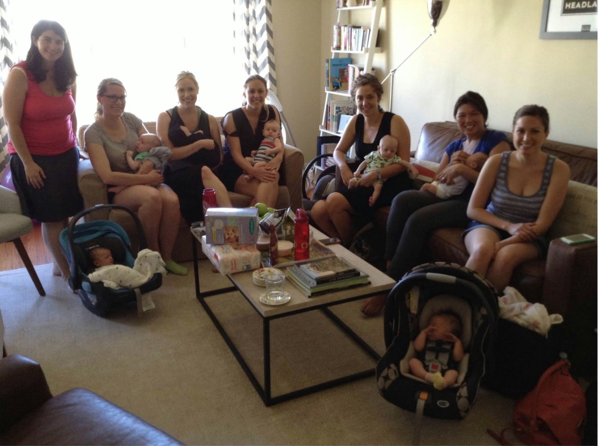

Circle of New Moms with Caroline Kerhervé
Being a new mother can often be isolating and overwhelming. Two of the best ways to work through the changes that come with a new baby are connecting with people going through the same experiences and to receive support from an expert. As an IBCLC with a background in clinical psychology, I facilitate groups for new mothers that provide an opportunity to share struggles and successes, gather local parenting resources, and ask questions of an expert.
Join us to create a safe and intimate circle where you can connect, feel supported, and gain confidence among other moms going through the same experiences. There will be a pre-defined theme each week with time for Q&A at the end of each session. I attend and facilitate each meeting, structuring the conversation and ensuring that all moms get a chance to express themselves. Expect to laugh, to dig into tough topics, and to learn!
If you're interested in signing up for the next series, please fill out this form. I will be in touch with the details.
- When: Groups typically run from 2-4pm. They are offered throughout the year, beginning as soon as 6-7 participants have signed up.
- Who: Groups are available for moms of 0-3 month old babies, 3-6 month old babies, and second-time moms. Where: Meetings are held in moms’ homes, alternating each week. There is no obligation to host if it is not compatible with your living situation or neighborhood.
- Investment: This program is $345 and includes six weeks of support and resources.
About Caroline
I am an International Board Certified Lactation Consultant (IBCLC) and postpartum doula. Trained as a clinical psychologist in France, I use my counseling skills daily in my work with families and moms, tailoring my approach and recommendations to their specific needs. I have worked with over 400 families in San Francisco in the last 6 years. I aim at establishing a true relationship and providing support to families from pregnancy up to their toddler years, so they can to reach their breastfeeding and parenting goals. I invite you to learn more at www.carolinekerherve.com.0-3 Month Themes
Week 1: Birth stories/early postpartum and becoming a mom
Week 2: Sleep arrangements and challenges; evolution of sleep patterns in baby
Week 3: Going back to work and childcare options
Week 4: Relationship with partner
Week 5: From being a daughter to becoming a mom; family dynamics
Week 6: Moving forward—solid foods, maternal body changes, developmental changes in baby, etc.
3-6 Month Themes
Week 1: Introduction and Q&A sleep arrangements and concerns
Week 2: Developmental play and activities with baby
Week 3: Going back to work, pumping, and child care
Week 4: Relationship with partner, self-care, and organization of the household Week 5: Introduction to solid foods
Week 6: Moving forward—common challenges for the 6-9 month period
Second-Time Mom Themes
Week 1: Birth stories/early postpartum
Week 2: Sibling adjustment
Week 3: Relationship to partner, family dynamics Week 4: Routine changes
Week 5: Self-care
Week 6: Moving forward
FAQ
I am pregnant. Can I register?
Baby needs to be 2 weeks old minimum to attend the first session. But please fill out the form and I will add you to the waitlist. Contact me again anytime once your baby is born!
Do I bring my baby to the group?
Yes, of course babies are more than welcome! But if you want to keep your baby at home for any reason, please feel free to do so. Do what works best for you each week!
What if the group is full when I want to register?
Please ask to be added to the waiting list. I will contact you if a spot becomes available. There could also be another group starting soon. Fill out this form to learn about the next series!
What if I have to miss a session?
It’s totally fine. You can still ask questions to the group in between sessions. There is no refund for missed sessions, as the spot is reserved for you and can't be offered to someone else.
What if I need/want to cancel before the 1st session?
You can ask for a complete refund up to 2 weeks before the first session. After that, you get a full refund if you find another mom to replace you or if I have someone on the waiting list willing to take your spot. If no one can be found, 50% will be refunded. There will be no refunds for cancellations made on the day of the first session or within the previous 72 hours.

Testimonials
Colleen: I participated in one of Caroline's new mom groups, and loved it. It was wonderful to get to know other moms who are going through the same things as you. The weekly meetings with the same group of people allow the time to really get to know one another, and establish the trust required to have honest conversations. As a facilitator, Caroline is nonjudgmental, helpful and informative. I loved the resources she introduced to us—articles, web sites and other people we may want to talk with to learn more.
Arcadia: "Further on into my maternity leave I was lucky enough to participate in one of her guided moms' groups. Caroline has a wonderfully nurturing, humorous, and nonjudgmental manner and she created a very safe and happy environment for us new moms to talk about a whole range of issues—from the mundane to the seemingly taboo. I was very sad to see the 6 week session come to an end but know that I'll stay in touch with both Caroline and the new moms I met over the coming weeks and months."
Mary: "I participated in one of Caroline's mommy support groups, and absolutely loved it. It really helped me transition into mommyhood. As a Type A kind of person who feels like she can do it all, being a new mom quickly taught me that things can get overwhelming. Caroline's mommy support group taught me that I'm not the only one feeling that way. The camaraderie and sororal atmosphere was something I looked forward to weekly. Plus, it was nice to get perspective and validation from other moms going through (or having already gone through) certain milestones and challenges."
Ilana: "After my second son was born this past December I was looking for a way to connect with other moms. I found Caroline Kerhervé and joined the second time moms group she put together. I am so thankful for her and for the wonderful group of women she found! Caroline was a warm, caring, knowledgeable group leader. She was very organized and a great communicator. Each week the group met she guided us through discussion on subjects very relevant to second time moms. Her advice and guidance were truly compassionate and helpful. She also has kids herself so she completely gets it!!
I liked the group sessions so much that I am planning to participate in another group of hers soon!”